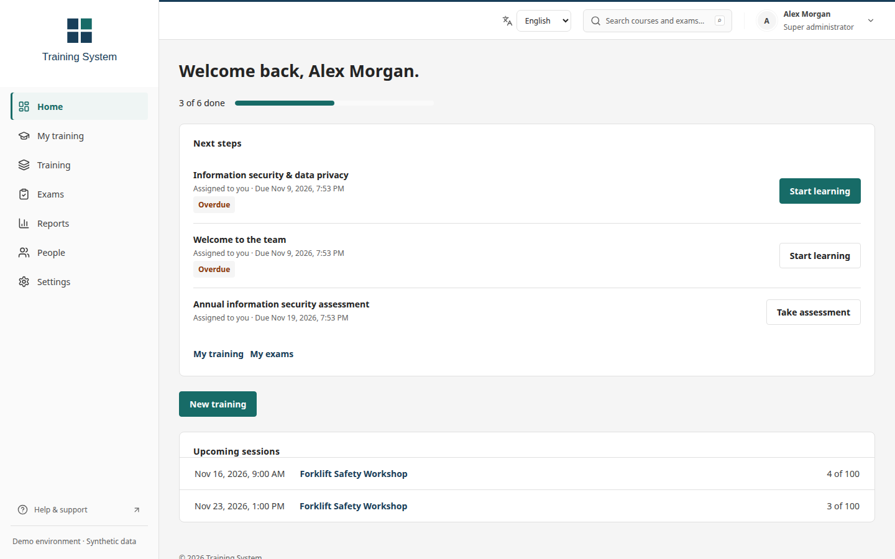
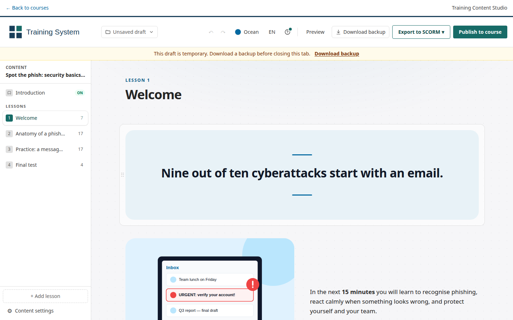
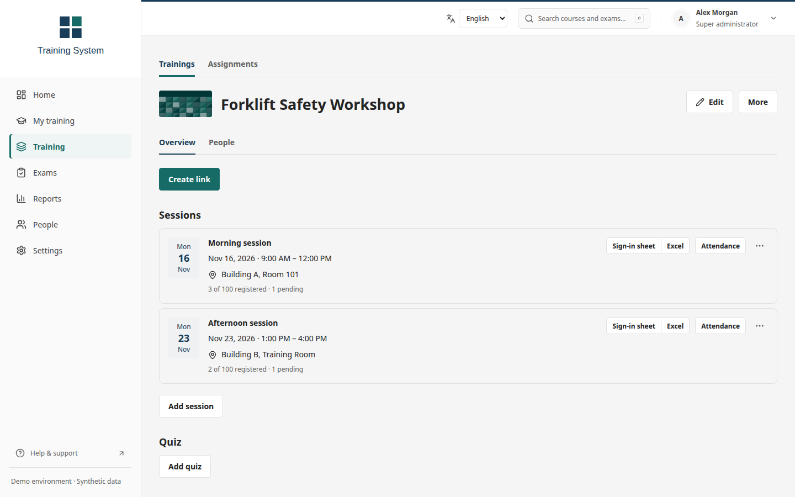
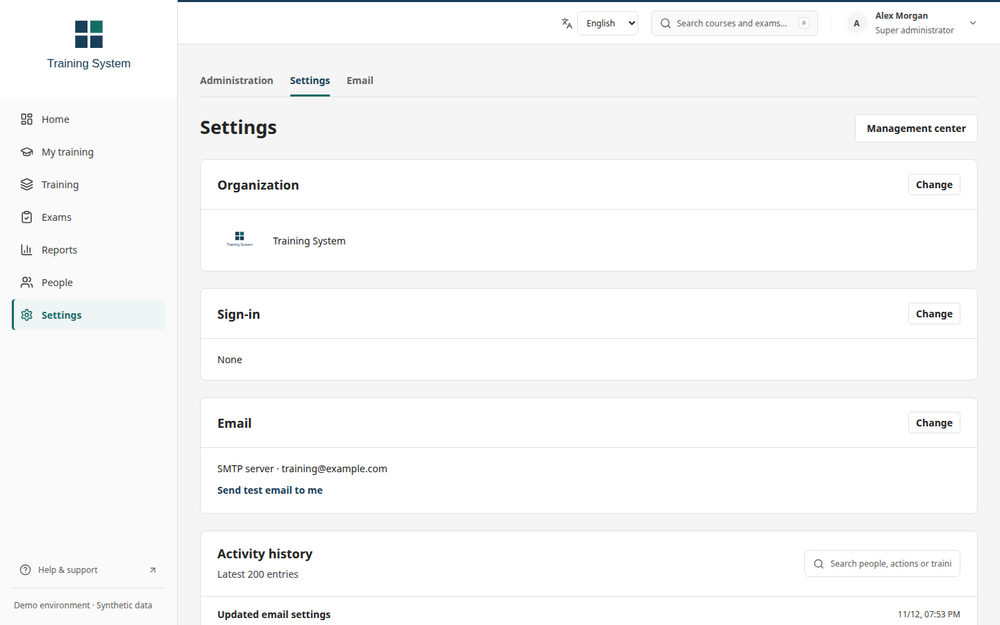

Learn
學習
Take courses, resume SCORM lessons and track required training.
修習課程、繼續 SCORM 教材，並追蹤必修訓練。
Manage learning, sessions and exams in one workspace. Configure your organization, languages, sign-in and e-mail in Settings.
在同一個工作區管理學習、梯次與考試。在設定中調整組織資訊、語言、登入方式與電子郵件。

Take courses, resume SCORM lessons and track required training.
修習課程、繼續 SCORM 教材，並追蹤必修訓練。
Build lessons in Studio, import document text or upload SCORM packages.
用 Studio 製作教材、匯入文件文字或上傳 SCORM 套件。
Schedule training, register people and record attendance.
安排訓練、辦理報名並記錄出席。
Create exams, reuse questions and review written answers.
建立考試、重複使用題庫並批改文字作答。
View completion, results and question analysis; export records.
查看完成情形、成績與試題分析，並匯出紀錄。
Manage people, roles, organization settings, sign-in and e-mail.
管理人員、角色、組織設定、登入與電子郵件。



Use Docker Engine and Compose v2. Run these commands from the repository root.
使用 Docker Engine 與 Compose v2。在儲存庫根目錄執行以下指令。
Edit .env: replace SECRET_KEY and POSTGRES_PASSWORD with separate random values. Keep DEBUG=true for this local trial and set DEMO_MODE=false. Leave provider credentials empty.
編輯 .env：將 SECRET_KEY 與 POSTGRES_PASSWORD 換成各自獨立的隨機值。本機試用保留 DEBUG=true，並設為 DEMO_MODE=false。服務提供者的憑證先留白。
cp .env.example .env chmod 600 .env
Enter the administrator e-mail and password at the prompts. The last command grants the platform Super administrator role.
依提示輸入管理員的電子郵件與密碼。最後一個指令授予平台的超級管理員角色。
docker compose up --build -d --wait docker compose exec api python manage.py createsuperuser --username training-admin docker compose exec api python manage.py shell -c "from training.models import User; u=User.objects.get(username='training-admin'); u.role='admin'; u.save(update_fields=['role'])"
Open http://localhost:8080 and sign in. Open Settings in the sidebar, then the Settings tab, to set organization name/logo, interface languages, sign-in and e-mail. Save, then send a test e-mail to yourself if enabled. Follow the deployment guide before production use.
開啟 http://localhost:8080 並登入。在側邊欄開啟「設定」，再點「設定」分頁，設定組織名稱與標誌、介面語言、登入方式及電子郵件。儲存後，若已啟用郵件，請寄送測試郵件給自己。正式使用前請依部署指南完成設定。
More from Ted Huang. Every public project has a page like this one, in English and Traditional Chinese.
Ted Huang 的其他作品。每個公開專案都有一頁像這樣的中英雙語介紹。
All projects →全部專案 →